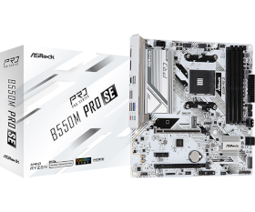
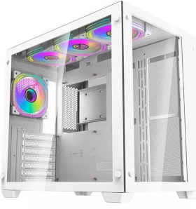

Setup
Placa mãe: B550M Pro SE

- Suporta Soquete AMD AM4 Ryzen™ 3000, 3000 G-Series, 4000 G-Series, 5000 e 5000 G-Series Desktop Processors*
- Suporta DDR4 4733+ (OC)
- 1 PCIe 4.0 x16, 1 PCIe 3.0 x16, 1 PCIe 3.0 x1
- Opções de Saída de Vídeo: HDMI, DisplayPort
- Realtek ALC897 Áudio HD 7.1 Canais Codec
- 4 SATA3, 1 Hyper M.2 (PCIe Gen4 x4),
1 M.2 (PCIe Gen3 x2 & SATA3)
- 6 USB 3.2 Gen1 (4 traseiras, 2 Front)
- Dragon 2.5G LAN
- Suporta Proteção Traseira Pré-Instalada
Gabinete: Aigo C285, C/ 4f W

- Marca: Aigo
- Modelo: C285-WH
- Material: 0.8 mm SPCC
- Placa mãe suportada: ATX, M-ATX, ITX
- Entradas: 1 x USB 3.0, 2 x USB 2.0, HD Áudio, Power, Reset
- Baias: 3.5": 1, 2.5": 2
- Slots de expansão: 7
- Comprimento máximo da VGA: 410 mm (Máx.)
- Altura máxima do cooler da CPU: 160 mm (máx.)
- Fonte de alimentação suportada: ATX, 240 mm(máx)
- Dimensões: 425 x 285 x 400 mm